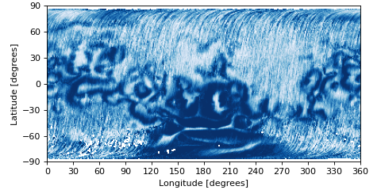

pyuvs.load_map_magnetic_field_open_probability#
- pyuvs.load_map_magnetic_field_open_probability() ndarray[source]#
Load the map denoting the probability of an open magnetic field line.
- Returns:
Array of the image.
- Return type:
np.ndarray
Notes
This map comes from MGS data. It has a shape of (180, 360).
The zeroth axis corresponds to latitude and spans -90 to 90 degrees.
The first axis corresponds to east longitude and spans 0 to 360 degrees.
Examples
Visualize this array.
import matplotlib.pyplot as plt import matplotlib.ticker as ticker import pyuvs as pu fig, ax = plt.subplots(1, 1, figsize=(6, 3), constrained_layout=True) b_field = pu.load_map_magnetic_field_open_probability() ax.imshow(b_field, cmap='Blues_r', extent=[0, 360, -90, 90], origin='lower', rasterized=True) ax.set_xlabel('Longitude [degrees]') ax.set_ylabel('Latitude [degrees]') ax.xaxis.set_major_locator(ticker.MultipleLocator(30)) ax.yaxis.set_major_locator(ticker.MultipleLocator(30)) plt.show()
(Source code, png, hires.png, pdf)

{kind=link}
{kind=link}